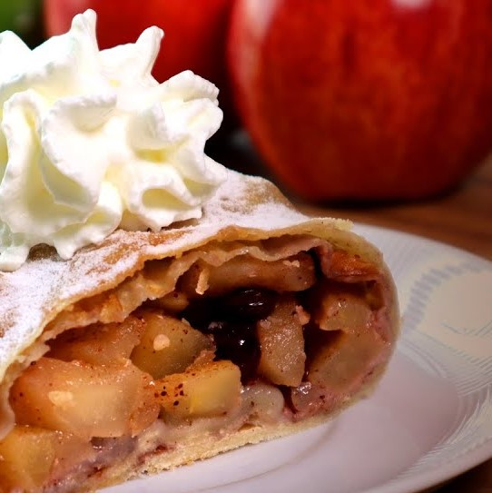
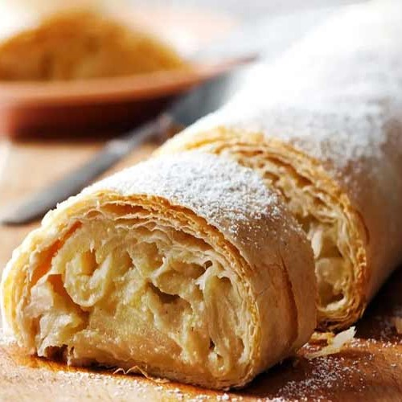
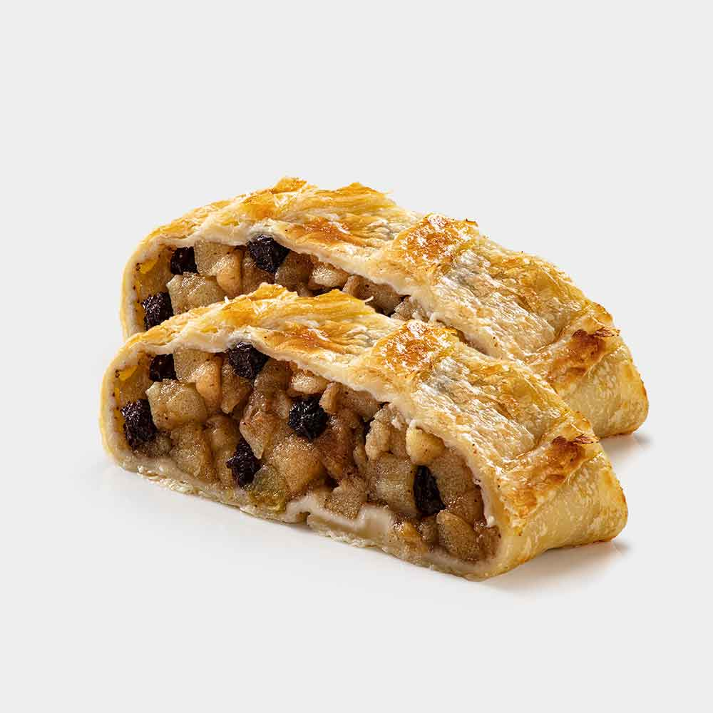

Ingredientes
- 200 gramas de massa folhada
- 2 maçãs descascadas e cortadas em cubos
- 2 colheres de sopa de margarina
- 2 colheres de sopa de açúcar
- 30 gramas de uva-passa sem sementes
- 1 colher de chá de canela em pó
- 2 colheres de sopa de farinha de rosca
- Suco de meio limão
- 1 gema de ovo batida
Modo de Preparo
- Em uma tigela, coloque 2 maçãs descascadas cortadas em cubos, 2 colheres de sopa de margarina, suco de meio limão, 2 colheres de sopa de açúcar, 30 gramas de uva-passa sem sementes, 1 colher de chá de canela em pó e 2 colheres de sopa de farinha de rosca. Misture e reserve.
- Polvilhe farinha de trigo sobre a massa folhada pronta e abra com um rolo de macarrão.
- Coloque o recheio, deixando uma borda de 2 centímetros para enrolar. Enrole e feche as laterais.
- Coloque em uma forma untada com margarina e pincele a massa com uma gema de ovo batida
- Leve ao forno preaquecido a 180 graus Célsius por 45 minutos.
- Retire do forno e finalize com açúcar de confeiteiro.
STRUDEL DE MAÇÃ
O nome Strudel faz referência ao formato geométrico que esse doce apresenta, e seu nome varia de acordo com o recheio. Desse modo, o strudel de maçã é conhecido como Apfelstrudel, ao passo que o Krautstrudel é aquele recheado com repolho (pois é!).


Você sabia que: Embora muitas pessoas acreditem que o strudel é um prato de origem alemã, na verdade sua origem se deu nos países asiáticos, mais especificamente no Oriente Médio.
